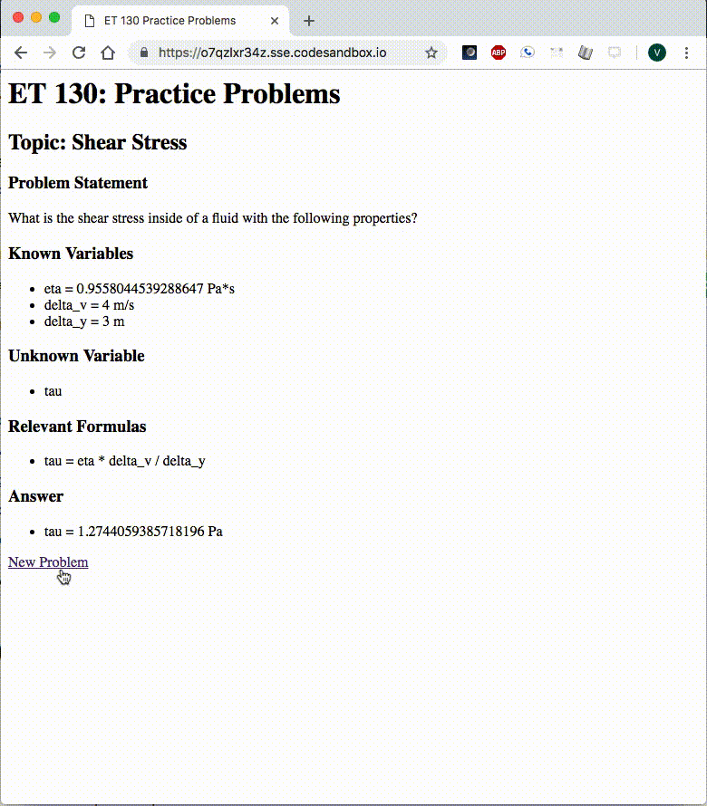
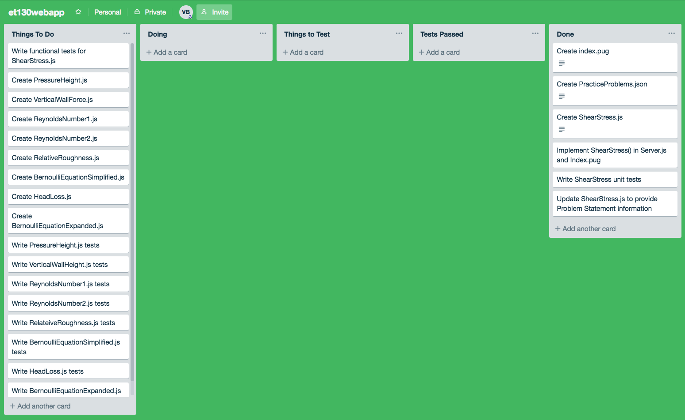
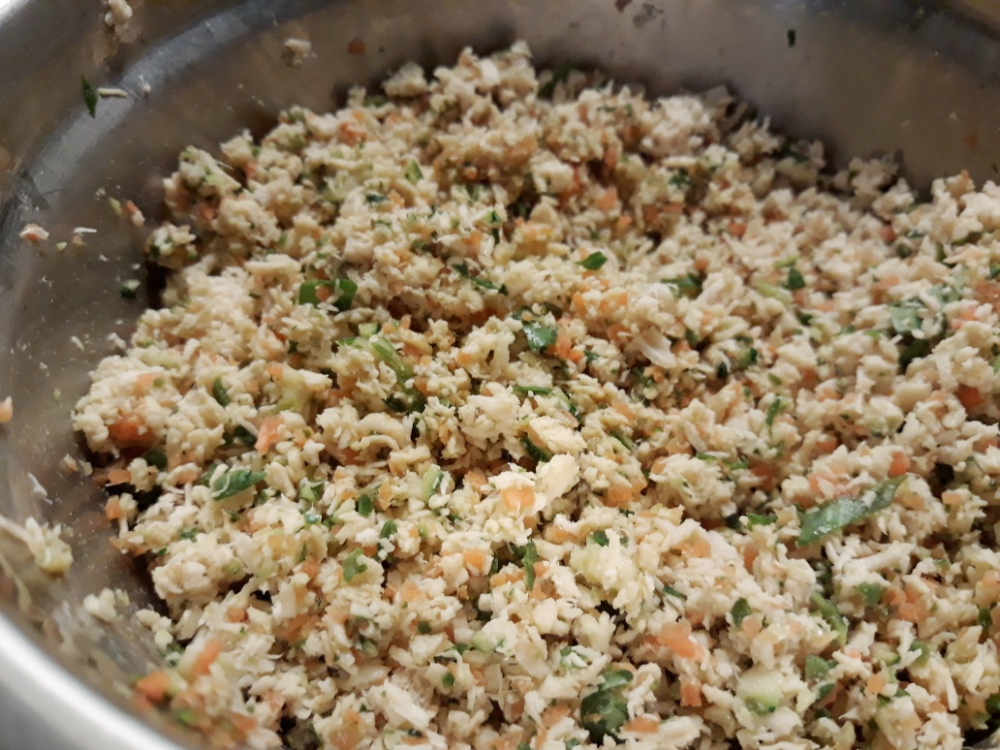

Project Journal: January 06, 2019
Things finally took off for my ET 130 Web App project. The Eagles also took off and are flying into the divisional round after beating the Bears.
Fruitful efforts
I am quite pleased with my progress today, as I able to go through a few working iterations of the core functionality in a development environment. The gif below shows the current functionality of my web app:

The user can click New Problem and the fields above update to give the user a new problem and answer. The web app performs the following broad three steps:- Create a new problem
- Create the corresponding answer
- Show it to the user
First attempt
I started out the day, and the project, with the following plan:
- Have a
jsonfile with practice problem information -
Read the
jsonfile intoserver.jsusingfs.readFile() - Parse the
jsondata into apracticeProblemobject - Calculate the answer and add it to the
practiceProblemobject - Send the
practiceProblemobject into anindex.pugtemplate
My json file contained the following structure:
{
"name": "practiceProblems.json",
"properties": [
{
"topic": "ShearStress",
"properties": {
"relevantFormulas": "tau = eta * delta_v / delta_y",
"problems": [
{
"problemStatement": "What is the shear stress ...",
"knownVariables": {
"eta": ["2", "unit"],
"delta_v": ["0.5", "unit"],
"delta_y": ["10", "unit"]
},
"unknownVariable": "tau"
}
]
}
}
]
}
Since json may not be the easiest to read for humans, here was my logic for the structure:
- Each element in the
problemsArray contains the following properties: problemStatement: some string that states the problemknownVariables: an object with variable name keys and associated [value, unit] valuesunknownVariable: some string of the unknown variable name
problems Array, and one problems Array
for each topic.
Calculating the answer
This flow worked okay, and was a great starting point since it helped me wrap my head around the problem.
Once server.js brought this data in, it sent it off to a function I created
called ShearStress:
function ShearStress(knownVariables) {
// Extract variables from input and convert to Double
let eta = Number(knownVariables.eta[0]);
let delta_v = Number(knownVariables.delta_v[0]);
let delta_y = Number(knownVariables.delta_y[0]);
// Calculate tau
let tau = (eta * delta_v) / delta_y;
// get correct units of tau
if (knownVariables.delta_y[1] == "m") tauUnit = "Pa";
if (knownVariables.delta_y[1] == "ft") tauUnit = "lb/ft^2";
return { tau: [tau, tauUnit] };
};
The ShearStress function receives the knownVariables
object, calculates the unknown variable tau, chooses the correct unit, and returns an
Array [tau, tauUnit].
The pug file then receives this data...
// Send the problem object to index.pug
res.render("index", practiceProblem);
...and lays it out for me...
html
head
title ET 130 Practice Problems
body
h1 ET 130: Practice Problems
h2='Topic: ' + topic
h3 Problem Statement
p=problemStatement
h3 Known Variables
ul
each val, index in knownVariables
li=index + ' = ' + val[0] + ' ' + val[1]
h3 Unknown Variable
ul
li=unknownVariable
h3 Relevant Formulas
ul
li=relevantFormulas
h3 Answer
ul
each val, index in answer
li=index + ' = ' + val[0] + ' ' + val[1]
a(href="/") New Problem
Echoes of an earlier vision
I was elated to accomplish this functionality, but there were some early-state-of-project realities I had to deal with:
- If I continued down this path, I would have to generate
problemselements manually in mypracticeProblems.json - I initially had created the
practiceProblems.jsonfile as an emulation of a MongoDB document, but I don't think I'm going to get to that stage in my two-week version.
So instead of getting my practice problems from my json file,
I decided to create a getProblem function:
function getProblem(unitSystem) {
// Initialize all variables
let eta, delta_v, delta_y;
// Assign random values and correct units based on unit system
if (unitSystem == "metric") {
eta = [0.001 + Math.random(), "Pa*s"];
delta_v = [Math.floor(Math.random() * 5 + 1), "m/s"];
delta_y = [Math.floor(Math.random() * 5 + 1), "m"];
}
if (unitSystem == "imperial") {
eta = [0.00003 + Math.random(), "lb*s/ft^2"];
delta_v = [Math.floor(Math.random() * 15 + 1), "ft/s"];
delta_y = [Math.floor(Math.random() * 15 + 1), "ft"];
}
// Build out the practiceProblem object
let practiceProblem = {
topic: "Shear Stress",
problemStatement: "What is the shear stress ...",
knownVariables: {
eta: eta,
delta_v: delta_v,
delta_y: delta_y
},
unknownVariable: "tau",
relevantFormulas: "tau = eta * delta_v / delta_y"
};
// Send it back
return practiceProblem;
};
Thus, the server's get route was simplified:
app.route("/").get(function(req, res) {
let unitSystems = ["metric", "imperial"];
let unitSystemsIndex = Math.floor(Math.random() * 2);
let unitSystem = unitSystems[unitSystemsIndex];
if (getProblem(unitSystems[unitSystemsIndex])) {
practiceProblem = getProblem(unitSystem);
practiceProblem.answer = ShearStress(practiceProblem.knownVariables);
}
// Send the problem object to index.pug
res.render("index", practiceProblem);
});
In case the server couldn't get the practiceProblem from
getProblem, I created a default problem that was
initialized and defined inside server.js.
Unit tests for values and units
I continue to enjoy writing tests, as they allow my understanding of the code to catch up to speed before I continue making the next feature in my web app.
I wrote tests which passed for the following:
ShearStress()- is a function
- returns an object
- return object has `tau` key
- return object[`tau`] is an array
- returns correct value of metric and imperial `tau`
- returns correct unit of metric and imperial `tau`
getProblem()- is a function
- returns an object
- return object has `topic`, `problemStatement`, `knownVariables`, `unknownVarialble`, and `relevantFormulas` keys
- return object has correct
typeofvalues - return object has correct metric or imperial values
- return object has correct metric or imperial units
The next task is writing functional tests before I can move on to adding more functionality.
Trello boardin'
I was pretty happy that Trello allows users to create an account for free as I was able to create a board for this project:

Currently I am using the following workflow:
- Things to do: start here with two-week version related tasks only
- Doing: one or more tasks (files) that I'm currently working on
- Things to test: All tasks wait here while I'm doing their corresponding testing task
- Tests passed: all passed tests for Things to test go here
- Done: once tests pass, Things to test gets dumped into here
This will help me focus on server.js, index.pug and
one topic in a given cycle.
freeCodeCamp podcast
I switched up again *gasps again* and listened to a freeCodeCamp podcast today, Ep 50 - Sacha Greif, designer, developer, and open source creator. I'm only an hour or so into the episode, but am thoroughly enjoying both Quincy Larson's interviewing style, and Sacha Greif's anecdotes.
Dog chef Bakshi
In an effort to create a healthier diet for our dog, we have decided to start introducing homemade food in addition to his other regularly scheduled meal contents. I made the following today using our relatively new food processor, and took this sweet pic:

Here's the recipe:
- Chop up chicken breasts into 1-2 inch cube-like pieces
- Sauté the chicken
- Chop some veggies (spinach, carrots, and zucchini)
- Food process the veggies
- Food process the chicken separately
- Combine in a bowl and refridgerate or freeze based on chicken's expiry date
We chose to keep a 1 part veggies : 2 part chicken ratio in order to keep it protein-heavy per serving.